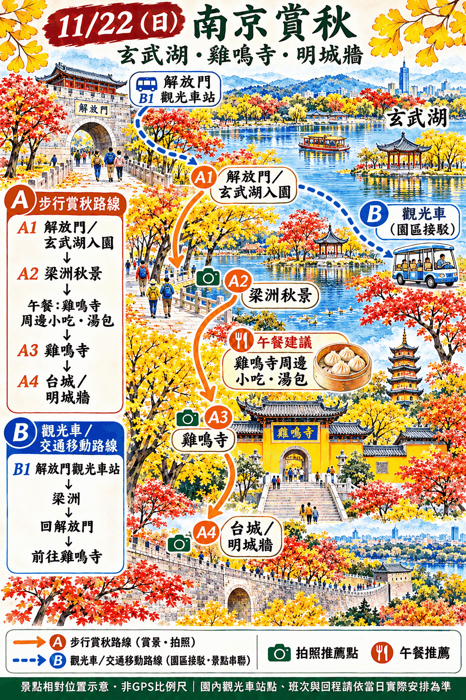

📍 站位：梁洲湖畔
取景：銀杏＋亭閣
11/22（日） 玄武湖・雞鳴寺
🍁 11-22｜玄武湖・雞鳴寺・明城牆｜正式彩繪每日路線圖

📍 當日路線・大字清晰版
以下依本日原行程時間安排重排，並非依模糊圖片辨字。可隨手機放大，水彩圖保留作景觀參考。
- 1玄武湖梁洲秋景預估抵達 09:25
- 🍜玄武湖周邊午餐預估抵達 12:15
- 3雞鳴寺塔影預估抵達 13:50
時間為估計，非預約時間；實際接駁及步行依現場路況。路線圖片的地理比例與連線尚未通過驗收。
🚌 11/22 現場路線｜解放門 → 梁洲 → 雞鳴寺
① 解放門入湖：找景區「解放門線」觀光車站牌，確認班次與是否在梁洲停靠，再上車；路線依官方 2026 導遊圖。
② 梁洲下車賞秋：湖畔拍銀杏、亭閣；午餐及休息依當日體力安排。
③ 回解放門：依官方站序，解放門線從解放門出發，經菱洲、櫻洲、梁洲及其他各洲繞行後回解放門；不是梁洲直達解放門的保證快捷車，回程須問現場工作人員。
④ 解放門 → 雞鳴寺：出園後按開放道路與雞鳴寺路標步行，地圖橘線是 OSM 步行路網候選，不代表入口之間已實地勘驗。
玄武湖官方 2026 遊客圖（觀光車線）離線時，上方圖和本段文字可閱讀；站牌班次、票價及臨時停駛以當日公告為準。
11/22（日） 玄武湖・雞鳴寺展開 ▾
⏱️ 慢走1.5倍｜到達機位與拍照時間
到達時間是估計，含慢走及必要轉乘緩衝；不是精確定位或預約時段。
09:00出發／前站 → 約09:25抵達｜玄武湖梁洲秋景
🚶 從入口至候選拍照區25–40分
📸 拍照45–60分
⚠️ 梁洲距入口依實際入口而異
12:00出發／前站 → 約12:15抵達｜玄武湖周邊午餐
🚶 移動15–25分
📸 用餐60–75分
⚠️ 先休息再走下一站
13:30出發／前站 → 約13:50抵達｜雞鳴寺塔影
🚶 入寺／坡道步行20–35分
📸 參觀拍照45–60分
⚠️ 城牆為選配，額外至少60分
🚇 怎麼去
天隆寺搭1號線至玄武門；再往雞鳴寺、明城牆
📷 看什麼・怎麼拍
玄武湖看湖光城牆；城牆拍湖景
☔ 雨天／替代
雨天改南京城牆博物館
🍜 雞鳴湯包 南京
📸 今日沿路最佳機位（依景點順序）
No.3｜玄武湖｜玄武湖梁洲銀杏亭閣
從梁洲湖畔找銀杏與亭閣同框；原圖具體亭閣未核實，以現場景觀選位。
No.5｜雞鳴寺｜雞鳴寺秋葉塔影
在開放步道利用秋葉框住塔樓，略低角度拍攝。
📷 今日景點照片・最佳拍照點
📍 站位：開放步道
取景：秋葉框住塔
⚠️ 本圖為「入口→步道→建議站位→主景」的概念相對位置圖，不是依真實園區方位測繪，也不代表入口與機位間的實際路徑、距離或東西南北。高德目前連至景點區域，未核實精確拍攝座標；現場以開放道路與標示為準。
🍴 11/22｜一日三餐・餐廳導航
今日路線：玄武湖梁洲 → 午餐 → 雞鳴寺。不為用餐額外折返；「高德」開啟後請確認分店並按路線導航。
☕ 早餐｜南京住宿地・步行優先首選：煎餅來了（雨花客廳店）
實際店址：軟件大道109號雨花客廳6棟114室（與雨花精品酒店式公寓同棟，具體出口以現場為準）。
推薦餐食：現做煎餅／可外帶早餐；具體配料、單品售價待店家菜單核對。
人均消費：待確認（個人預算可先抓 ¥15–25，非店家實際報價）。
營業時間：待核實；若當日上午出發早，前一晚先核對開門時段。
早上動線：酒店6棟 → 同棟114室早餐 → 步行前往天隆寺站搭地鐵1號線（以實際出口為準）。
備選：麥當勞（天隆寺地鐵站餐廳）
安德門大街32號，靠近天隆寺站。可選麥滿分／薯餅／熱飲等早餐供應品項（是否供應、價格依門市當日菜單）。
人均：待核實 營業／早餐供應時段：待核實。
住宿：雨花精品酒店式公寓｜軟件大道109號雨花客廳6棟；不應誤用其他相似名稱的酒店。11/22 早餐後直接接當日原行程，不另跨區覓食。
🍜 午餐｜就近用餐方案／尚未選定餐廳雞鳴湯包（附近分店待核）
順路理由：玄武湖出園後挑就近實際營業分店
推薦餐點與單價：推薦餐點：湯包／鴨血粉絲；單品售價待店家菜單確認
人均消費：人均消費：待確認，無可靠公開報價
營業時間：待查
位置：南京 鸡鸣汤包 玄武湖
🍽️ 晚餐｜就近用餐方案／尚未選定餐廳南京住宿地附近南京菜
順路理由：走完雞鳴寺後回程就近吃
推薦餐點與單價：推薦餐點：南京菜／麵食；單品售價待店家菜單確認
人均消費：人均消費：待確認，無可靠公開報價
營業時間：依選定店家
位置：南京 雨花台 南京菜
「待查」並不代表店家已確認營業。人民幣人均數字為第三方平台近期參考，非餐點定價；優惠、座位、正確分店與當日營業以商家及高德／美團即時資訊為準。未指名餐廳的欄位是備案，不能當成已核實店家。
⌂ 返回日期主選單